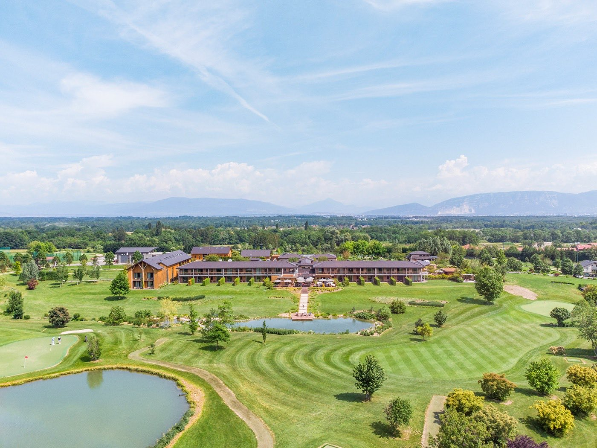
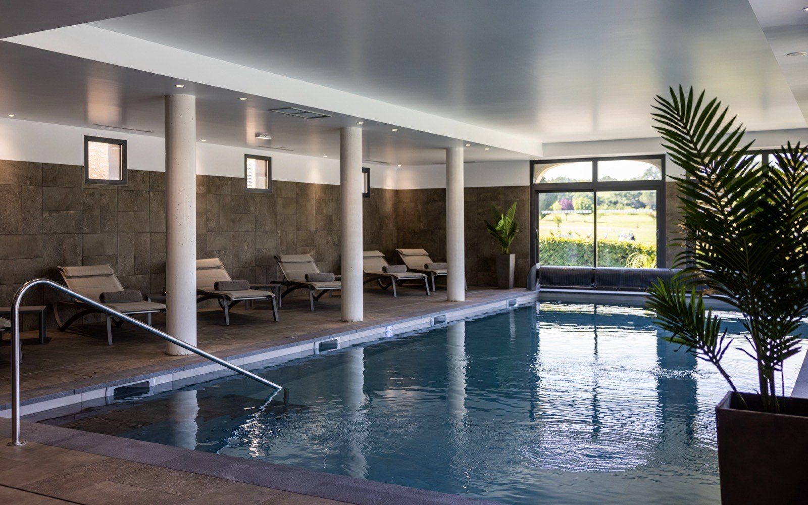
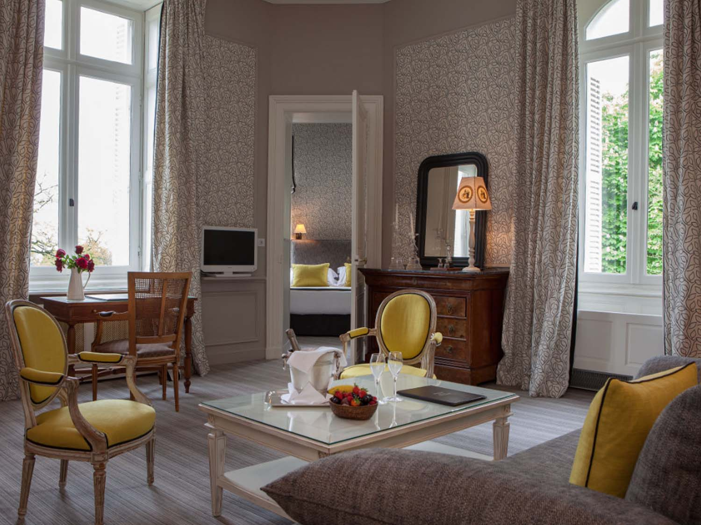
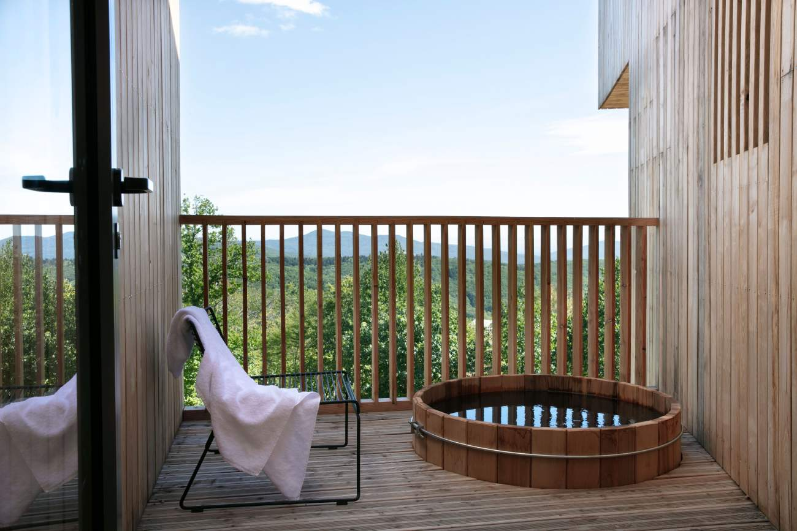
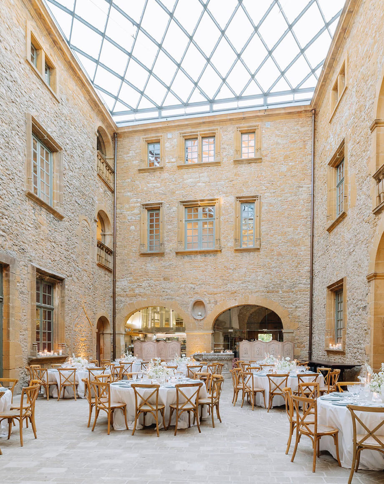

Hôtel avec spa privatif en France : 12 adresses testées, du chalet au château
Bain nordique en suite ou espace commun loué à l'heure : sous le même mot « privatif »
se cachent deux réalités qui n'ont pas le même prix. 12 adresses testées anonymement
entre février et juillet 2026, dont 11 réellement privatives ; la douzième, Le Barn,
au spa collectif, sert de contre-exemple.
Par Lucas Lecoq, rédacteur en chef✺Publié le 21 juillet 2026✺17 min de lecture
Photo : La Cheneaudière & Spa, Colroy-la-Roche, site officiel. Les visuels de cet article proviennent des établissements cités.
TL;DR : l'essentielLe meilleur hôtel avec spa privatif de France
La Cheneaudière (Alsace), 18,6/20 : bain nordique
privatif face à la forêt des Vosges, inclus dans chaque suite.
Les Sources de Caudalie (Bordeaux), 18,5/20 : le spa
de vinothérapie privatisable, unique en France.
Jiva Hill Resort (Pays de Gex), 18,1/20 : chalet avec
jacuzzi extérieur privatif, face au Mont-Blanc.
La donnée qui change tout : sur 12 établissements testés,
seulement 4 proposent un vrai spa privatif permanent en chambre ou en suite.
7 louent un espace commun privatisable à l'heure, et 1
(Le Barn) ne propose qu'un spa collectif malgré son référencement fréquent en « spa privatif ».
Prix moyen d'une nuit avec spa privatif permanent inclus : 535 €.
Tarif moyen de privatisation à l'heure : 64 € (sur les 4 tarifs publiés).
Introduction : deux réalités derrière un même mot
« Spa privatif » est devenu l'une des recherches les plus tapées sur Google dans le secteur hôtelier. Derrière ce terme, deux réalités très différentes : le spa intégré à la chambre ou à la suite (bain nordique, jacuzzi, hammam personnel, accessible 24 h/24) et le spa commun privatisable à l'heure (réservé pour 1 ou 2 heures, partagé le reste du temps). On a testé 12 établissements entre février et juillet 2026 pour faire la distinction.
Protocole LMHS appliqué (Luxe, Mise en scène, Hospitalité, Soin), score /20. Visites anonymes, aucun partenariat. Donnée exclusive : distinction systématique entre spa privatif permanent et spa privatisable à l'heure, vérifiée sur place.
Spa privatif permanent vs privatisable : la distinction que personne ne fait
Critère
Spa privatif permanent
Spa privatisable à l'heure
Accès
24 h/24, inclus dans la chambre
Créneaux réservables (1-2 h)
Prix
Inclus dans le tarif nuit
45-80 €/heure en supplément (tarifs publiés)
Intimité
Totale, aucun autre client
Totale pendant le créneau
Équipements
Jacuzzi, hammam, douche, souvent bain nordique
Variable selon l'établissement
Valeur
Meilleure dès 2 nuits
Intéressant pour 1 nuit
Cette distinction change tout pour le budget. Un hôtel à 350 €/nuit avec spa privatif inclus revient moins cher qu'un hôtel à 200 €/nuit assorti de 120 € de location de spa. Les chiffres ne mentent pas.
Le classement complet : 12 hôtels selon le Protocole LMHS
Rang
Hôtel
Région
Score LMHS
Prix nuit
Type de spa
Équipements
01
La Cheneaudière
Alsace
18,6/20
420 €
Permanent (suite)
Bain nordique, sauna, hammam
02
Les Sources de Caudalie
Bordeaux
18,5/20
380 €
Privatisable
Vinothérapie, bain de vin
03
Jiva Hill Resort
Pays de Gex
18,1/20
580 €
Permanent (chalet)
Jacuzzi ext. hammam, sauna
04
La Bastide de Gordes
Provence
17,6/20
790 €
Permanent (suite)
Jacuzzi, hammam, vue Luberon
05
Château des Vigiers
Dordogne
17,0/20
310 €
Privatisable
Piscine intérieure, hammam
06
Domaine de la Tortinière
Loire
16,6/20
280 €
Privatisable
Jacuzzi, sauna, vue château
07
48° Nord
Alsace
16,2/20
350 €
Permanent (suite)
Bain nordique, sauna
08
Le Barn
Chevreuse
16,0/20
290 €
Collectif (non privatif)
Hammam, sauna, bains nordiques
09
Brindos Lac & Château
Pays basque
15,9/20
340 €
Privatisable
Jacuzzi lac, hammam
10
Domaine de Verchant
Montpellier
15,1/20
320 €
Privatisable
Piscine, hammam
11
Château de Bagnols
Beaujolais
14,7/20
450 €
Privatisable
Hammam, jacuzzi
12
Hôtel Le Cep
Beaune
14,2/20
260 €
Privatisable
Jacuzzi, hammam
Note : prix nuit = chambre double en basse saison.
Spa privatif permanent = inclus 24 h/24. Privatisable = location en supplément.
Mis à jour juillet 2026.
Les 12 adresses : ce qu'on a vraiment trouvé
01
La Cheneaudière, Alsace 18,6/20
Nichée à Colroy-la-Roche, dans la vallée de la Bruche, à 1 h de Strasbourg. Chaque suite dispose d'un bain nordique privatif en mélèze sur sa terrasse, face à la forêt des Vosges. On s'y glisse à 38 °C, en plein air, avec les sapins pour seul horizon. Le spa est inclus dans le tarif nuit, pas de supplément, pas de créneau à réserver.
Ce qu'on a aimé : la cohérence totale entre le cadre alsacien, le bois, l'eau et le silence. Le petit-déjeuner servi en chambre avec des produits locaux.
Ce qui déçoit : l'accès depuis Paris (3 h de route, ou TGV puis voiture), et des suites de base un peu petites pour le prix.
Pour qui : les couples qui veulent s'isoler complètement · Alsace · Dès 420 €/nuit, spa privatif inclus
02
Les Sources de Caudalie, Bordeaux 18,5/20
Posées au milieu du vignoble de Château Smith Haut Lafitte, à Martillac, à 20 minutes de Bordeaux. Le spa privatif ici, c'est un espace de vinothérapie réservable à l'heure : bain de vin chaud, gommage au marc de raisin, hammam. L'odeur du raisin et du bois de chêne imprègne tout l'espace.
Ce qu'on a aimé : l'originalité totale du concept (nulle part ailleurs en France), la qualité des soins Caudalie, le cadre viticole.
Ce qui déçoit : c'est un spa privatisable, pas permanent, il faut réserver son créneau à l'avance, et les week-ends sont souvent complets.
Pour qui : les amateurs de vin et de bien-être en quête d'une expérience unique · Bordeaux · Dès 380 €/nuit, spa privatisable en supplément
03

Jiva Hill Resort, Pays de Gex 18,1/20
À Crozet, au pied du Jura, à 15 minutes de Genève et face au Mont-Blanc. Les chalets disposent chacun d'un jacuzzi extérieur privatif et d'un sauna. La nuit, avec la vue sur le massif enneigé et le ciel alpin, l'expérience est difficile à égaler.
Ce qu'on a aimé : la qualité de construction des chalets (bois, pierre, matériaux nobles), le service discret et précis, la vue imprenable.
Ce qui déçoit : la proximité de Genève attire une clientèle d'affaires qui casse parfois l'ambiance retraite. Et 580 €/nuit, c'est le tarif le plus élevé du classement.
Pour qui : les amateurs de montagne qui ne veulent pas sacrifier le confort · Pays de Gex · Dès 580 €/nuit, spa privatif inclus
04
La Bastide de Gordes, Provence 17,6/20
Surplombe le village de Gordes, classé parmi les plus beaux de France (l'établissement a rejoint la collection Airelles sous le nom « Airelles Gordes, La Bastide »). Les suites supérieures disposent d'un jacuzzi privatif sur terrasse, avec vue directe sur le Luberon.
Ce qu'on a aimé : la vue (aucun autre établissement du classement n'offre ce panorama), la pierre de taille, la lavande qui pousse à 50 mètres.
Ce qui déçoit : Gordes est victime de son succès, en juillet-août, le village est saturé et l'accès en voiture devient un calvaire. Le spa privatif n'est disponible que dans les suites supérieures.
Pour qui : la Provence authentique avec un niveau de confort élevé · Provence · Dès 790 €/nuit en basse saison
05

Château des Vigiers, Dordogne 17,0/20
Un château du XVIe siècle au cœur du Périgord, entouré de vignes et d'un golf 18 trous. Le spa privatisable comprend une piscine intérieure chauffée, un hammam et un sauna, réservables pour 2 heures.
Ce qu'on a aimé : le cadre historique (pierres apparentes, cheminées, parquet), la piscine intérieure de qualité, le calme absolu du domaine.
Ce qui déçoit : le spa est privatisable à l'heure, pas permanent, et les créneaux du week-end partent vite. Le golf attire une clientèle qui n'est pas toujours là pour le spa.
Pour qui : patrimoine et nature, sans le prix des palaces · Dordogne · Dès 310 €/nuit, spa privatisable à 90 €/2 h
06

Domaine de la Tortinière, Loire 16,6/20
Un château néo-gothique du XIXe siècle, posé sur une colline dominant la vallée de l'Indre, à 30 minutes de Tours. Le spa privatisable comprend un jacuzzi, un sauna et une douche sensorielle, avec vue sur le parc.
Ce qu'on a aimé : le rapport qualité/prix (280 €/nuit, le moins cher du top 6), le charme du château, l'accueil familial et chaleureux.
Ce qui déçoit : le spa est petit (2 personnes maximum à l'aise), et l'équipement est moins impressionnant que dans les adresses alsaciennes ou alpines.
Pour qui : le romantisme châtelain sans se ruiner · Loire · Dès 280 €/nuit, spa privatisable à 70 €/heure
07

48° Nord, Alsace 16,2/20
Un lodge de charme à Muhlbach-sur-Munster, dans la vallée de Munster. Les suites disposent d'un bain nordique privatif et d'un sauna. L'esthétique est scandinave : bois brut, laine, peaux, lumière basse.
Ce qu'on a aimé : l'atmosphère cocooning assumée, le bain nordique en plein air même en hiver, le petit-déjeuner alsacien copieux.
Ce qui déçoit : l'établissement est plus petit et moins luxueux que La Cheneaudière, on est dans le charme, pas dans le palace. La connexion wifi est aléatoire.
Pour qui : l'ambiance nordique et la nature, avec un budget plus raisonnable qu'au n°1 · Alsace · Dès 350 €/nuit, spa privatif inclus
08
Le Barn, Chevreuse 16,0/20
Installé dans un ancien moulin du XVIIIe siècle, au cœur du parc naturel de la Haute Vallée de Chevreuse, à 1 h de Paris. Le spa (hammam, sauna, bains nordiques) est collectif et gratuit pour les clients, pas privatif. On l'inclut dans ce classement précisément parce qu'il figure dans beaucoup de listes « spa privatif », ce qui est trompeur.
Ce qu'on a aimé : le cadre nature exceptionnel (200 hectares de forêt), le mobilier soigné, la proximité de Paris.
Ce qui déçoit : le spa n'est pas privatif, c'est un espace collectif ouvert de 9 h à 20 h. Le restaurant est décevant pour le prix (50 €/personne).
Pour qui : les Parisiens qui veulent la nature sans aller loin, sans exiger un spa privatif · Chevreuse · Dès 290 €/nuit, spa collectif inclus
09
Brindos Lac & Château, Pays basque 15,9/20
Un château Art déco des années 1920, posé au bord d'un lac privé à Anglet, à 5 minutes de Biarritz. Le spa privatisable comprend un jacuzzi avec vue sur le lac et un hammam.
Ce qu'on a aimé : le cadre unique (lac privé, architecture Art déco, palmiers), la proximité de Biarritz et de l'océan.
Ce qui déçoit : le spa privatisable est petit et les créneaux sont limités. L'entretien du château mériterait un investissement.
Pour qui : le Pays basque dans un cadre historique · Pays basque · Dès 340 €/nuit, spa privatisable en supplément
10
Domaine de Verchant, Montpellier 15,1/20
Un mas du XVIIe siècle entouré de vignes, à 10 minutes de Montpellier. Le spa privatisable comprend une piscine intérieure, un hammam et un sauna.
Ce qu'on a aimé : la douceur du cadre méditerranéen, les vins du domaine servis au restaurant, la piscine extérieure en été.
Ce qui déçoit : le spa privatisable est en sous-sol, sans lumière naturelle, l'ambiance est moins séduisante que dans les adresses alpines ou alsaciennes.
Pour qui : la Méditerranée et l'œnotourisme · Montpellier · Dès 320 €/nuit, spa privatisable à 80 €/heure
11

Château de Bagnols, Beaujolais 14,7/20
Un château médiéval du XIIIe siècle classé Monument historique, au cœur du Beaujolais. Le cadre est exceptionnel : fresques du XVe siècle, mobilier d'époque, douves. Le spa privatisable (hammam, jacuzzi) est en revanche décevant pour le prix.
Ce qu'on a aimé : l'expérience historique unique, dormir dans un château médiéval classé, le service attentionné.
Ce qui déçoit : 450 €/nuit pour un spa privatisable en sous-sol avec des équipements datés, c'est difficile à justifier.
Pour qui : les passionnés de patrimoine qui placent le cadre avant le spa · Beaujolais · Dès 450 €/nuit, spa privatisable en supplément
12
Hôtel Le Cep, Beaune 14,2/20
Un 4 étoiles installé dans plusieurs maisons du XVe au XVIIe siècle, en plein centre de Beaune. Le spa privatisable (jacuzzi, hammam) est disponible à la réservation.
Ce qu'on a aimé : l'emplacement (à 2 minutes des remparts), le charme des pierres et des poutres, la cave à vins.
Ce qui déçoit : le spa est petit et les équipements sont basiques pour le prix. L'hôtel vit surtout sur son cadre et sa localisation, le spa est une option, pas un argument central.
Pour qui : la Bourgogne et l'œnotourisme, avec un spa en option · Beaune · Dès 260 €/nuit, spa privatisable à 60 €/heure
Données propriétaires LMHS : ce que ça coûte vraiment
Type
Exemple
Prix 2 nuits
Spa inclus
Coût total
Coût du spa
Permanent
La Cheneaudière
840 €
Oui (illimité)
840 €
0 €
Permanent
Jiva Hill
1 160 €
Oui (illimité)
1 160 €
0 €
Privatisable
Château des Vigiers
620 €
Non
800 € (+ 2 × 90 €)
45 €/h
Privatisable
Domaine de la Tortinière
560 €
Non
700 € (+ 2 × 70 €)
70 €/h
La phrase à retenir : « Sur 12 hôtels avec spa privatif testés en France, seulement 4 proposent un spa privatif permanent inclus dans le tarif de la nuit. Les 7 autres facturent la privatisation d'un espace commun en supplément ; les 4 tarifs rendus publics vont de 45 à 80 €/heure, soit 64 €/heure en moyenne. »
Tarifs horaires calculés sur les 4 adresses dont le prix de privatisation est public
(Vigiers 90 €/2 h, Tortinière 70 €/h, Verchant 80 €/h, Le Cep 60 €/h). Les 3 autres facturent
« en supplément » sans tarif affiché.
Par région : où trouver les meilleurs spas privatifs ?
Alsace : la région championne (2 adresses dans le top 7)
La Cheneaudière et 48° Nord font de l'Alsace la meilleure région française pour le spa privatif permanent. Le bain nordique en plein air face aux Vosges est une expérience difficile à trouver ailleurs en France.
Jura et Alpes : le jacuzzi sous les étoiles
Jiva Hill Resort est l'adresse de référence. La combinaison chalet privatif, jacuzzi extérieur et vue Mont-Blanc est unique. Budget : 580 € et plus par nuit.
Provence et Sud-Ouest : le cadre, plus que le spa
La Bastide de Gordes et Les Sources de Caudalie séduisent par leur cadre (Luberon, vignobles bordelais) plus que par leur spa. Bon choix si le cadre prime sur l'équipement. Pour les meilleures thalassos du sud, voir notre classement thalasso dans le sud de la France.
FAQ : hôtel avec spa privatif en France
Quelle est la différence entre spa privatif et spa privatisable ?
Spa privatif permanent : intégré à la chambre ou à la suite, accessible 24 h/24, inclus dans le tarif. Spa privatisable : espace commun réservable pour un créneau (1-2 h), en supplément. Sur 12 hôtels testés, seulement 4 proposent un vrai spa privatif permanent.
Quel est le meilleur hôtel avec spa privatif en France ?
La Cheneaudière en Alsace (18,6/20 LMHS) : bain nordique privatif permanent face aux Vosges, inclus dans chaque suite, à partir de 420 €/nuit.
Quel hôtel avec spa privatif offre le meilleur rapport qualité/prix ?
Domaine de la Tortinière en Loire (16,6/20, 280 €/nuit + 70 €/h de spa). Meilleur prix du classement pour un château avec spa privatisable de qualité. Si vous voulez du privatif permanent, c'est 48° Nord en Alsace (16,2/20, 350 €/nuit, bain nordique inclus).
Peut-on trouver un hôtel avec spa privatif près de Paris ?
Pas dans ce classement. Le Barn à Chevreuse (1 h de Paris, 290 €/nuit) propose un spa collectif, pas privatif. Le plus proche avec spa privatisable est le Domaine de la Tortinière (2 h 30, Loire). Pour du spa privatif permanent, il faut viser l'Alsace (La Cheneaudière, 48° Nord) : 4 h à 5 h de route.
Combien coûte en moyenne une nuit dans un hôtel avec spa privatif en France ?
535 €/nuit en moyenne pour un spa privatif permanent inclus. 334 €/nuit en moyenne pour un établissement à spa privatisable (moyenne des 7 adresses concernées, hors Le Barn dont le spa est collectif), auxquels s'ajoutent environ 64 €/heure de privatisation. Budget total pour 2 nuits à deux : 840 à 1 160 € (spa permanent) contre 700 à 800 € (spa privatisable).
Méthode et sources
12 établissements visités entre février et juillet 2026. Visites anonymes. Aucun partenariat. Score LMHS sur 4 critères (Luxe, Mise en scène, Hospitalité, Soin). Distinction spa permanent / privatisable / collectif vérifiée sur place et auprès des équipes. Photographies : sites officiels des établissements cités. Pour le palmarès complet, voir notre palmarès des 50 meilleurs hôtels & spas de France.